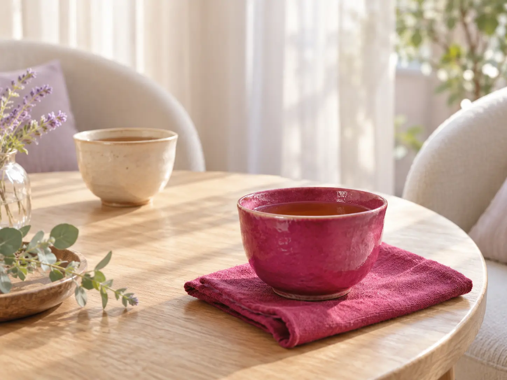
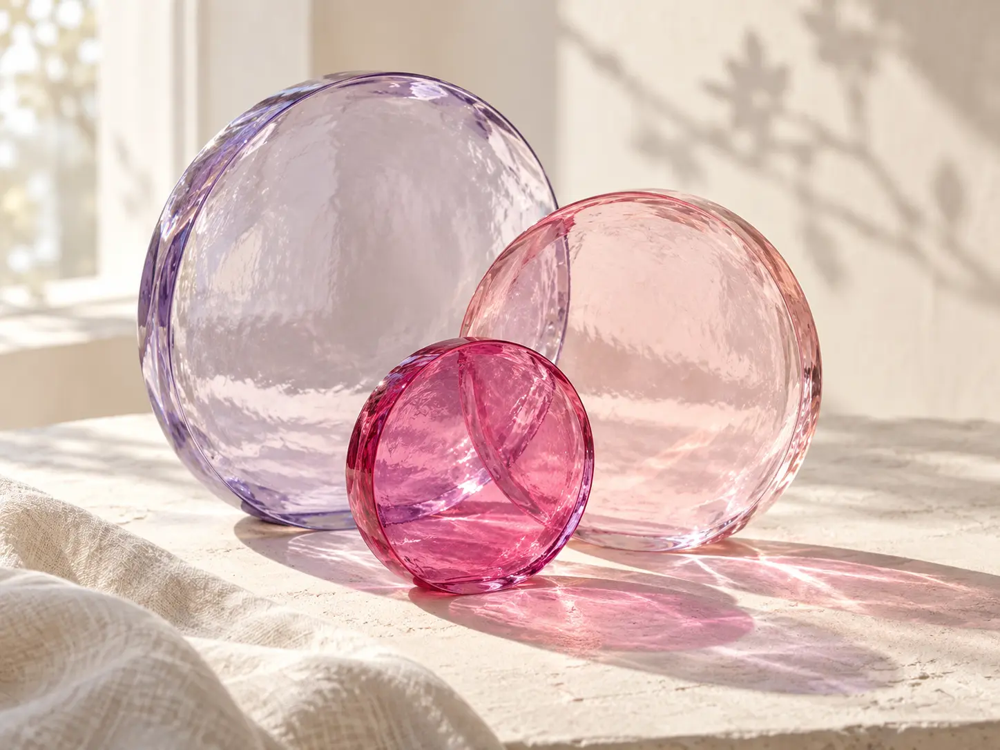
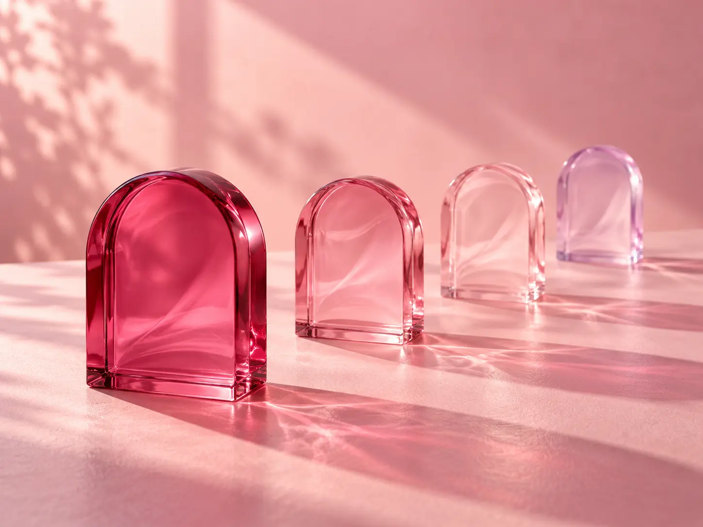
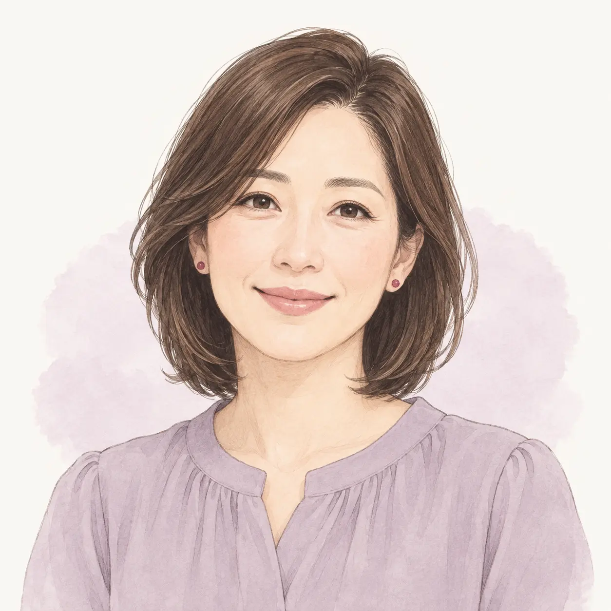
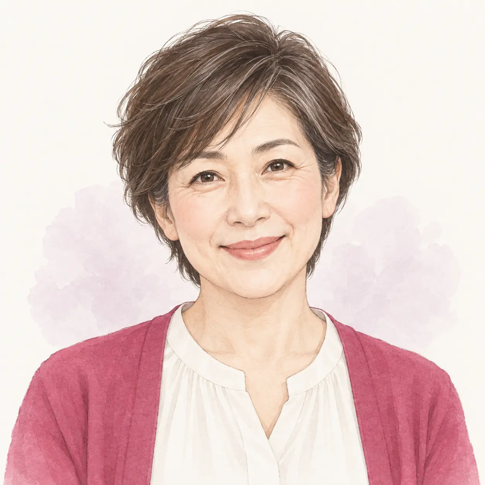
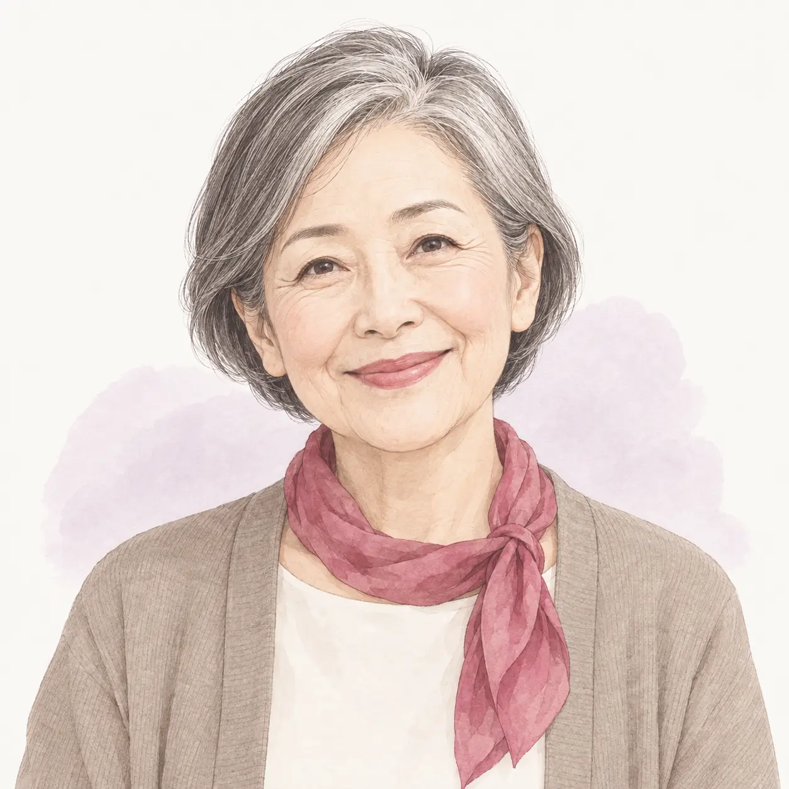

本音に気づく
- 自分が本当は何を感じているのか、言葉にする。
- 心の奥にある、大切にしたい想いを見つける。
01 / YOUR FEELINGS
まずは、その気持ちを
そのまま言葉にしてみませんか。

02 / A DIFFERENT PERSPECTIVE

「もっと学べば、きっと変われる」。
そう思って、頑張ってきたのかもしれません。
少し立ち止まって、やり方だけでなく、今の自分が何を感じているのかを見つめる時間を。
色をきっかけに、言葉にしづらかった気持ちを一緒に整理していきます。
これまでに学んできたこと
本音・気持ち・大切にしたいこと
どちらも大切にしながら、あなたらしい一歩へ。
04 / THE SESSION

立ち止まる
最近の出来事や、心に引っかかっていることから。うまくまとめようとせず、お話しください。
感じてみる
気になる色から、浮かんでくる想いや感覚を言葉に。自分の内側にゆっくり目を向けます。
紐解く
対話を通して気持ちを整理し、これから大切にしたいことを一緒に見つけていきます。
選んでみる
気づきを日常につなげるために。今のあなたが無理なく取り組める一歩を考えます。
05 / VOICES
SAMPLE 01 ／ 仮原稿
家族や周りのことを優先するうちに、自分の気持ちがわからなくなっていました。色を選びながら話す時間は、頭で答えを探すよりも自然で。「私はこう感じていたんだ」と、少しずつ言葉にできるような時間でした。
自分の気持ちにも、耳を傾けるきっかけに。

SAMPLE 02 ／ 仮原稿
何かを学べば変われると思って、いつも次の答えを探していました。うまく話さなくてもいいと感じられて、肩の力が少し抜けた気がします。今は新しい知識を増やすより、自分の心を確かめる時間を大切にしたいです。
「今の私」から、ゆっくり始めるために。

SAMPLE 03 ／ 仮原稿
気になる色をきっかけに話していると、普段は気づかない想いが浮かんできました。すぐに結論を出さず、一緒に整理してもらえるのが印象的でした。迷っている自分を急かさずに、大切にしたいことを考えてみようと思います。
答えを急がず、心の声をひとつずつ。

SAMPLE 04 ／ 仮原稿
これからの暮らしを考えると、何から始めればいいのか迷っていました。話す中で、まずは自分のための時間を少し持ってみたいと思いました。誰かと比べるのではなく、自分が心地よいと感じる選択を重ねていきたいです。
これからの毎日を、自分のペースで。
06 / COUNSELOR
担当者のプロフィールは、ただいま準備中です。
07 / INVITATION
メルマガ読者様限定
税込表記・お支払い方法は確認中です。
現在、お申し込みの受付準備中です。
継続サポートの内容とご案内方針は、受付開始までに掲載します。